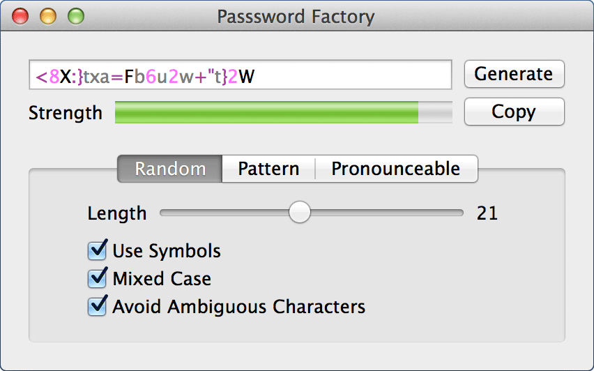

Password Factory Help
Password Factory is a flexible password generator that can give you passwords in a variety of formats.
Window Basics
The window consists of the password viewing area and the password generating area.
Viewing Area
This area consists of three sections, the password viewing area, strength meter, and the control buttons.
The password viewing area shows the currently generated password. The password is either shown in black or highlighted. When the password is highlighted each type of character is shown in a different color. See Preferences - Password Display for more information.
Below the password field is the strength meter. The stength meter will fill and indicate the relative strength via a color. Red is weak, yellow is medium, and green is strong. The strength meter goes from 0 to 100 and 100 is the strongest.
The strength level is only a guide, and will not assure your password won't be hacked
To the right are two buttons, generate will generate a new password, and copy will copy the current password to the clipboard
Generate Area
This consists of three tabs 'Random', 'Pattern' and 'Pronounceable'. Each tab will generate a password using a different format.
Random Password
The random option will generate a random password based on the options selected.
- Length
- This slider will set the length of the generated password, from 5 to 40 characters
- Use Symbols
- If this is checked symbols (i.e !,$,%) will be randomly added
- Mixed Case
- When this is checked uppercase and lowercase characters will be used, if it is unchecked, only lowercase will be used
- Avoid Ambiguous Characters
- If checked, characters that look like other characters will not be used, for example, 0,O,1,L
Pattern
The password generated will be based upon the pattern typed in the pattern field. A pattern is a series of characters that are replaced with a random character or characters following the pattern. The pattern symbols are as follows
- #
- This will be replaced by a number
- !
- An exclamation point will be replaced by a symbol, such as #,%,^
- w
- A lowercase 'w' will be replaced by a lowercase 6 or more letter word
- W
- This is the same as 'w', but the word will be in all capital letters
- s
- An 's' will be replaced with a 3 to 6 letter word
- S
- The same as 's', but in all capital letters
- c
- This will be replaced by a single lowercase letter
- C
- A 'C' will be replaced by a single uppercase letter
When typing in the pattern field any character not in the pattern list will be used as is. If you want to insert any of the pattern characters directly precede with a '\'
For example the pattern 'cC\C!w' will be a lowercase letter, uppercase letter, C, a symbol, and a word which would give a result like 'kWC!senseless'
Pronounceable
The pronounceable tab will generate a random password that is pronounceable rather than random. There are two options for generating, length, and separator
The length slider will set the approximate length for the password, and the separator buttons toggle between six different separators
Preferences
Password Display
The password display section controls how the password is shown in the app. If 'Color Password Text" is checked the characters in the password will be colored. Coloring the password text will enable you to easily distinguish between similar characters. You can change the color of each character type by clicking on the color boxes and selecting a new color
Generate and Copy Hotkey
The global hotkey will allow you to set a key command to autmatically generate a password and copy it to the clipboard.
Setting Global Hotkey
- Make sure 'Enable Global Hotkey' is checked
- If there is a shortcut displayed, click the delete button
- Click 'Record Shortcut'
- Press your desired key combination
Now your global hotkey is set, you can press your key combination when in any app to copy a password to the clipboard
There are two options for the global hotkey.
- Display Notification
- Enabling this will show a copy notification in Notification Center when the global hotkey is pressed
- Play Sound
- If this is checked, a sound will be played whenever the global hotkey is pressed
Clipboard Handling
Checking 'Automatically Clear Clipboard' will clear the clipboard of your password after the 'Clear Time' has passed. If you use a clipboard manager this may not remove the password from your clipboard manager